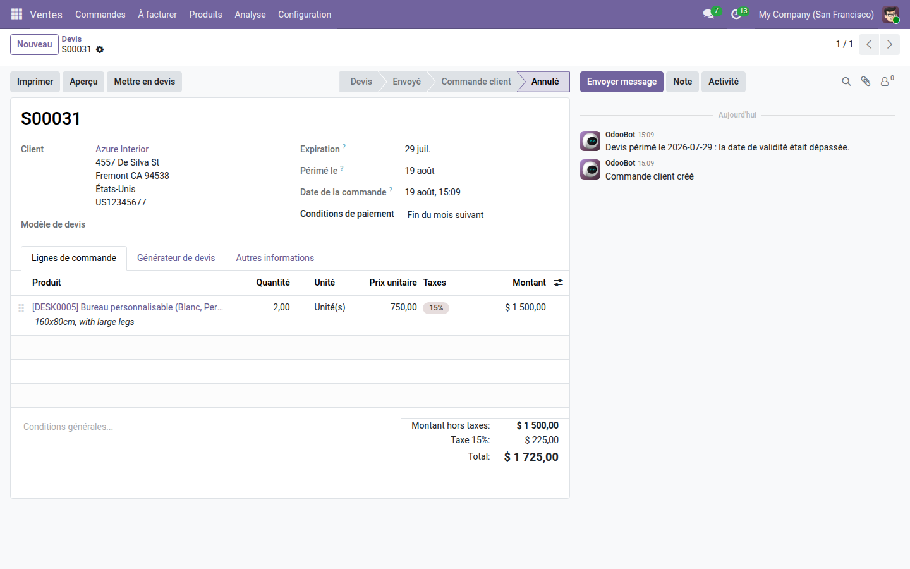
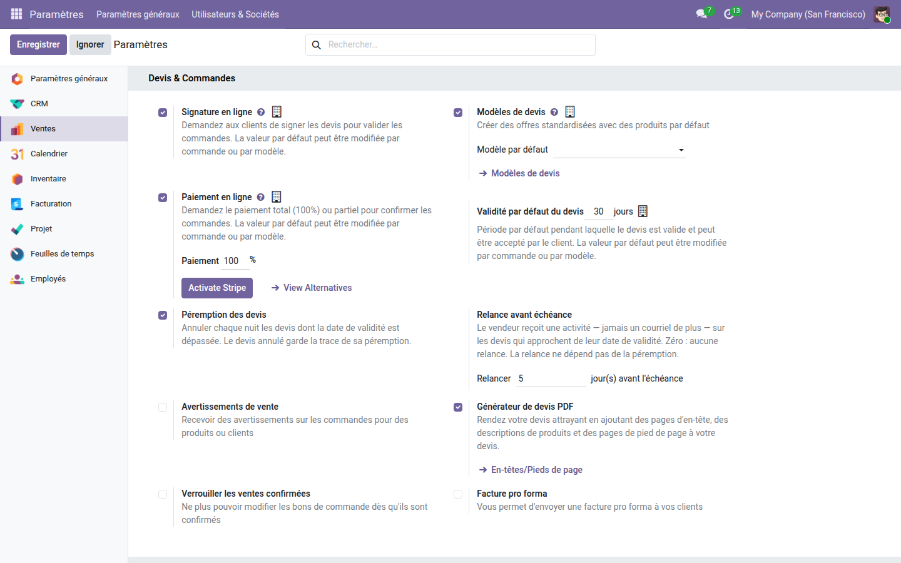

Les devis échus s'annulent d'eux-mêmes, et le vendeur est relancé avant l'échéance.
Odoo calcule une date de validité sur chaque devis, sait dire qu'il est expiré… et n'en fait rien. Les devis morts s'empilent dans le tunnel, gonflent le montant du pipeline et faussent les prévisions. Personne ne les rouvre jamais, et personne ne relance le client tant qu'il est encore temps.
Le devis est passé à l'état annulé, la date de péremption est inscrite à côté de l'expiration, et le fil de discussion garde la raison. Rien n'est effacé : le devis reste consultable et remettable en jeu.

La péremption et la relance se règlent séparément, juste sous la validité par défaut du cœur. Zéro jour de relance : aucune relance, sans que la péremption en soit affectée.

Fermer les devis morts assainit le tunnel ; le piloter demande davantage. La gamme OdooSkills couvre l'approbation des devis au-delà d'un seuil, la fusion de plusieurs devis d'un même client, les commissions des vendeurs et le cloisonnement des équipes commerciales. Catalogue complet : apps.odooskills.com.
Licence LGPL-3 — compatible Odoo 19.0 Community et Enterprise. Support : support@odooskills.com.